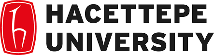
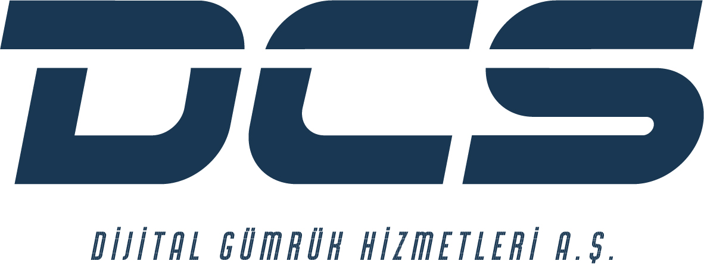
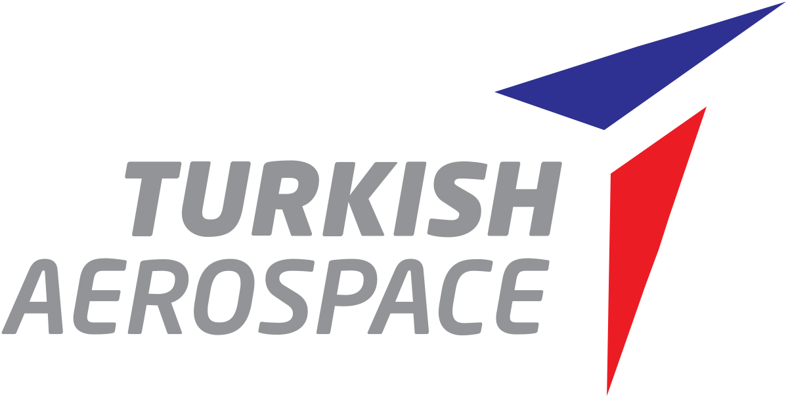
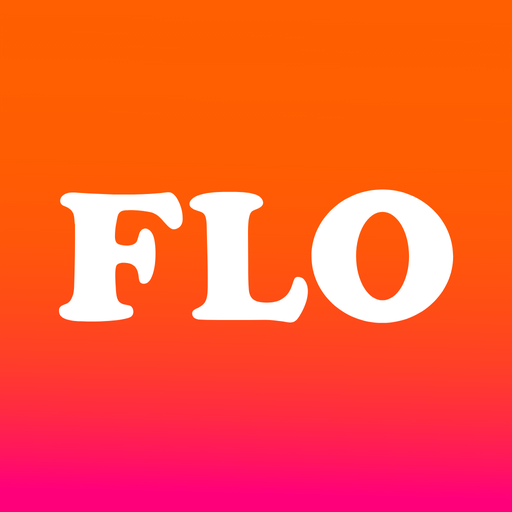

I graduated from Hacettepe University Industrial
Engineering department as an honor student. I am a
data-driven individual who values the importance of
understanding and analyzing data. Continuous
improvement is also a key aspect of my mindset.
Formal Education

Bachelor of Science in Industrial Engineering, Hacettepe University | 2016 - 2021
GPA:3,02
Honors Student
Work Experience
DCS (Digital Customs Services)

Mar 2021 - Oct 2021
To provide analysis and documentation management for the improvement and development of customer business processes for critical customers that are responsible for the sector.
Identifying efficiency and digitalization opportunities and making suggestions on improvement and development projects by realizing the first designs
To bring solutions in the focus areas determined in the project, to ensure that the projects are completed on the determined schedule and to publish progress reports
To make effective coordination between the relevant functions by taking part in the approved projects
To follow the process by transferring the needs to the software teams through the prepared analyzes
Making meetings and presentations to relevant managers and teams to share ideas and analysis
To provide information and training on the projects developed by working in coordination with the Customer Representative responsible for the customer.
ATEZ Software Technologies
Mar 2021 - Jun 2021
Comparing "Hyperledger Fabric" and "Enterprise
Ethereum Infrastructures" blockchain
technologies (via Multicriteria Decision Making)
for the purpose of digitizing the so-called
'Certificate of Origin' document.
Turkish Aerospace Industries

Sep 2020 - Jan 2021
Analyzing and improving all "Internal Logistics"
activities carried out in the ATAK Helicopter
Project and increasing efficiency with Lean
Manufacturing Techniques.
FLO Retailing

Aug 2020 - Sep 2021
Hyperledger Fabric Technology was applied to
FLO Retailing's supply chain and logistic
processes. Accordingly, a mobile application has
been designed.
Skills
Microsoft Office:★★★★★☆
SQL:★★★☆☆☆
MATLAB:★★★☆☆☆
Decision Making:★★★★☆☆
Arena Simulation:★★☆☆☆☆
Awards and Certifications
Yapi Kredi Bank Hackathon (2020)
I participated in the Code.YapıKredi Ideathon competition, which was organized by Yapı Kredi and ATÖLYE. As the SubHub team, we won second place in the Code.YapıKredi Ideathon competition. We won 6000₺ as a reward. We carried out a project with my team on key issues in the future of banking, such as the integration of the financial sector with other sectors and open banking. You can view our SubMan project in detail in the below.